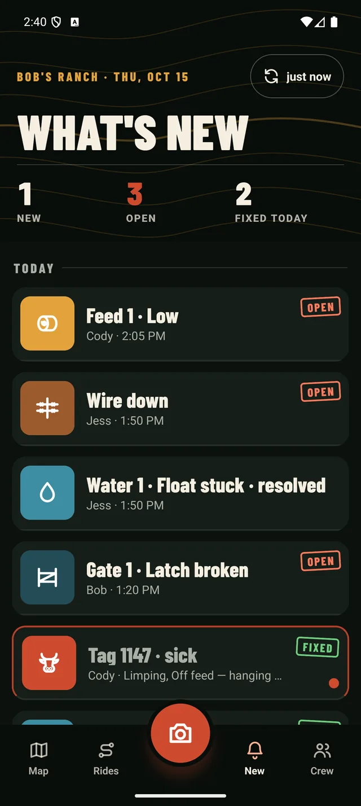
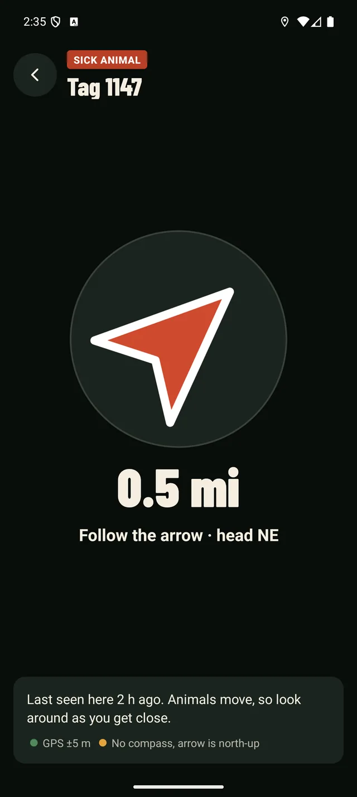

42 seconds
Watch Tag 1147 get pinned, synced and found again
One hand pins her in the brush with no signal. Back in range the crew has it, and whoever rides out next goes straight to her.
Read what the video says
Zero bars out in the pasture. In 10 seconds, with no signal, a hand pins Tag 1147 and it's saved on the phone. Someone else rides straight to her: 0.2 miles, follow the arrow. She's found, right where she was pinned. Back at the house, the owner sees what the crew found today and what's still open. Mark it once. Anyone can find it. Free for your ranch at getranchhand.com.
From one hand to the next
The radio call is gone by supper. The pin isn't.
-
Step 1 · Out in the pasture
10sec
Pin what you find
Snap a photo with the ear tag in frame and tap what's wrong: sick, feed, water, fence or gate. GPS and time fill in on their own, and the buttons work with gloves on.
-
Step 2 · Still no bars
0bars
Saved on the phone right away
Nothing waits on a signal. The photo, the note and the pin are on your phone the moment you tap save, marked as waiting to sync.
-
Step 3 · Back at the house
1arrow
Someone else rides out and fixes it
Once it syncs, the whole crew has the pin. Whoever goes next taps Take me there and rides straight to it, then marks it resolved. The owner sees the whole trail from town.
For owners and managers
See what the crew found today, and what's still open
Every pin shows who found it, when, with the photo, and who fixed it. Tanks, gates and feed stations keep their own history, so nothing depends on someone remembering to tell you.


Take me there
Tap the pin. Follow the arrow.
An arrow points straight at the sick cow or the broken float, and the distance counts down as you ride. It doesn't need roads, a signal or anybody describing which draw.
- Works offline. Download the ranch map once at the house, with sharp aerial photos down to the fence posts.
- Same map for everyone. The ranch's own pins, not public trails or somebody else's waypoints.
- Rides a new hand can follow. Record a ride and name it, and the next person can follow it to the right water.
Built for horseback and the side-by-side
Made for where the work happens
Smallest button
Every target is big enough for a gloved thumb, with text you can read in full sun.
To map a pasture
Ride the fence line once and it becomes a named pasture, with the sharpest aerial map we have from edge to edge.
Hardware
The phone you carry and the tag the cow already wears.
Treatment records with withdrawal dates
Log which animal got which drug, and Ranch Hand tracks the day its withdrawal period ends. We're building it with ranches on the list, so tell us if it matters to you.
Who's building this
Built after a week in the Nebraska Sandhills
I'm Bob Roberts. In the summer of 2026 I spent a week on a working cattle ranch in the Nebraska Sandhills, riding every day, checking cattle and riding along for haying. One problem stuck with me: a hand spots a sick calf or a stuck float where there's no signal, and the next person out can't find it again.
I'm not a rancher. I've built software for more than 15 years, and I also run Ranch Brand Book, a free directory of working ranches you can visit. Ranch Hand is the tool I wanted that week: offline-first from day one, buttons big enough for gloves, and built on open maps so a ranch's pins aren't locked into anybody's platform.
In June 2027 it rides out with working hands on a Wyoming ranch: real cattle, real feed runs and no cell signal. What they say decides what gets built next, and ranches on the list get the next spots to try it.
If something on your place gets lost between the pasture and the house, I'd like to hear about it. Email comes straight to me.
bob@getranchhand.comEarly access
Test it on your ranch
Only your email is needed; the rest helps us build it for your crew. Ranches on this list get the first beta spots, with a test link for iPhone or Android.
Free for one owner and up to three hands, forever. Bigger crews pay $19.99 a month per ranch, any size. Founding ranches lock in $199 a year for as long as they stay.
You're in
Thanks. We'll email you a test link when the beta opens.